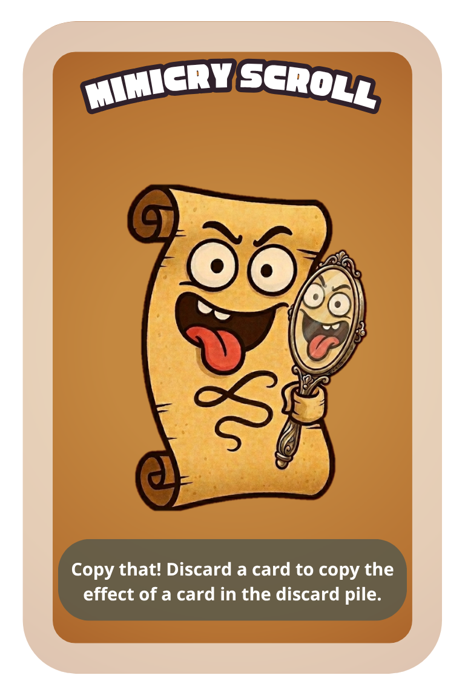

The scroll does not create. The scroll merely borrows, without asking, from the pile of things that have already happened.
Discard an additional card to copy the effect of any action card in the discard pile.